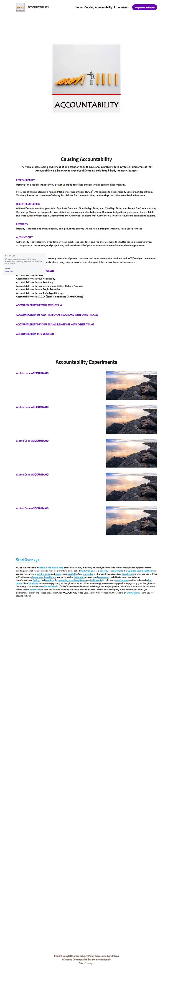

Accountability on Strikingly
RESPONSIBILITY
Nothing can possibly change if you do not Upgrade Your Thoughtware with regards to Responsibility.
If you are still using Standard Human Intelligence Thoughtware (S.H.I.T.) with regards to Responsibility you cannot depart from Ordinary Spaces and therefore Ordinary Possibilities for communication, relationship, and other valuable life functions.
DECONTAMINATION
Without Decontaminating your Adult Ego State from your Gremlin Ego State, your Child Ego State, your Parent Ego State, and any Demon Ego States you happen to have picked up, you cannot enter Archetypal Domains. A significantly decontaminated Adult Ego State suddenly becomes a Doorway into the Archetypal domains that Authentically Initiated Adults are designed to explore.
INTEGRITY
Integrity is created and maintained by doing what you say you will do. You in Integrity when you keep your promises.
AUTHENTICITY
Authenticity is revealed when you take off your mask, lose your face, end the show, remove the buffer zones, assassinate your assumptions, expectations, and projections, and transform all of your resentments into evolutionary healing processes.
AUTHORITY
Authority emerges when you exit any hierarchical power structures and enter reality at a tiny here and NOW and you be entering Presence and Being With. This is where things can be created and changed. This is where Proposals are made.
ACCOUNTABILITY FOR YOURSELF
Accountability with Gaia.
Accountability with your Hookability.
Accountability with your Reactivity.
Accountability with your Gremlin and his/her Hidden Purpose.
Accountability with your Bright Principles.
Accountability with your Archetypal Lineage.
Accountability with E.C.C.O. (Earth Coincidence Control Office)
ACCOUNTABILITY IN YOUR OWN TEAM
ACCOUNTABILITY IN YOUR PERSONAL RELATIONS WITH OTHER TEAMS
ACCOUNTABILITY IN YOUR TEAM'S RELATIONS WITH OTHER TEAMS
ACCOUNTABILITY FOR YOURSELF